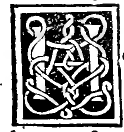

CHAPTER XXIV¶
On the Tenth Effect of Our Divine Proportion, Which Introduces the Formation of the Five Regular Bodies.

Tenth Effect of the Divine Proportion
If a straight line is equal in square to the side of the equilateral pentagon and to the side of the equilateral hexagon inscribed in the same circle, then it is equal to the side of the equilateral decagon inscribed in the same circle, and the side of the pentagon is greater than the side of the hexagon and than the side of the decagon; and therefore, if the two sides of the hexagon and the decagon are joined together into a single straight line, the whole line is divided according to our Divine Proportion, and its greater part is the side of the hexagon ([XIII.9], [XIII.10]).
We need not labor further on this tenth effect, because we already demonstrated it above in the first effect (Chapter VII). Yet it is restated here in the sequence of the tenth effect to display how all these admirable properties lead step by step to the construction of the most noble solid bodies—above all the fourth and fifth regular solids, the icosahedron and the dodecahedron, which cannot be formed or imagined without our Divine Proportion.
By the tenth of the thirteenth, in any circle, the square on the side of the inscribed equilateral pentagon equals the sum of the squares on the side of the inscribed hexagon and the side of the inscribed decagon:
\[s_{5}^{2} = s_{6}^{2} + s_{10}^{2}\]Therefore, if a straight line is equal in square (in potentia) to \(s_{5}\) and \(s_{6}\)—meaning that the square on \(s_{5}\) exceeds the square on \(s_{6}\) by the square on that line—that line is necessarily the side of the equilateral decagon (\(s_{10}\)) by the penultimate of the first.
And since \(s_{5}^{2} = s_{6}^{2} + s_{10}^{2}\), the square on the side of the pentagon is greater than the square on the side of the hexagon alone and greater than the square on the side of the decagon alone; hence in length also \(s_{5} > s_{6}\) and \(s_{5} > s_{10}\).
Furthermore, by the ninth of the thirteenth, when the side of the hexagon (\(s_{6}\)) and the side of the decagon (\(s_{10}\)) are joined in a single straight line, the whole compound line \(s_{6} + s_{10}\) is divided according to the extreme and mean ratio, and its greater segment is the side of the hexagon (\(s_{6}\)).
Numerical Example
Take the example already given above: let the square on the side of the pentagon (\(s_{5}^{2}\)) be \(20\), let the square on the side of the hexagon (\(s_{6}^{2}\)) be \(16\) (so that \(s_{6} = 4\), the radius of the circle), and let the square on the side of the decagon (\(s_{10}^{2}\)) be \(4\) (so that \(s_{10} = 2\)). Joining the side of the hexagon and the side of the decagon gives \(4 + 2 = 6\), though in exact geometric truth \(s_{6}\) and \(s_{10}\) are incommensurable when \(s_{6}\) is rational (\(s_{10} = \sqrt{20} - 2\) when \(s_{6} = 4\), so \(s_{5}^{2} = 16 + (\sqrt{20}-2)^{2} = 40 - 4\sqrt{20}\)).